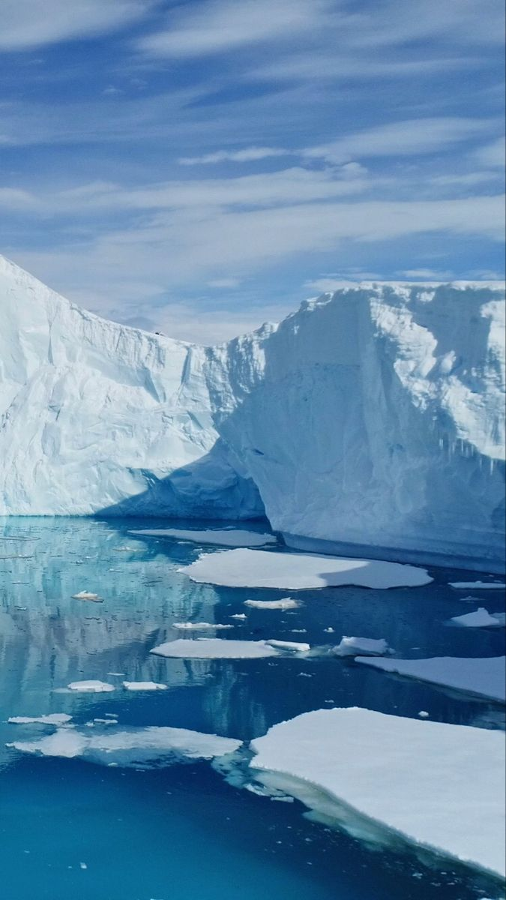
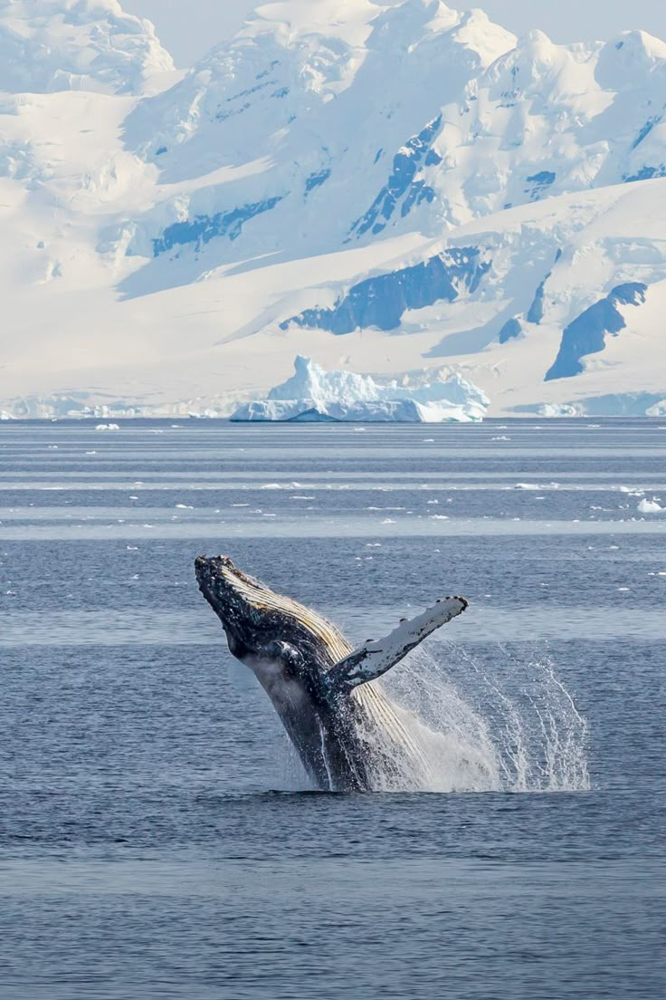

Welcome to Antarctica
The icebergs: La Antártida mayormente formada por masas de hielo gigantes conocidas como glaciares. Ya sea por el aumento de las temperaturas en la zona o por el mismo desplazamiento estas masas acaban rompiéndose y dando lugar a los icebergs. estos fragmentos de hielo sirven como descanso para muchas especies polares. formadas por escarcha y nieve que tienen como único soporte el mar. Estos fragmentos de hielo están compuestos de agua dulce

Welcome to Antarctica
The largest animal in the world: La ballena azul es el animal conocido más grande que vive en la Tierra. Estos majestuosos mamíferos marinos dominan los océanos con sus 30 metros de longitud y hasta 180 toneladas de peso. Solo su lengua puede pesar tanto como un elefante, y el corazón, como un automóvil. Recibe también el nombre de rorcual azul, compartiendo familia con otros rorcuales como el rorcual común o el rorcual boreal. Este gigante llega a como 16 toneladas de placton al dia

Welcome to Antarctica
the gentlemen with buns: Los pingüinos son aves marinas que no pueden volar viven casi exclusivamente por debajo del ecuador. Algunas especies se pueden encontrar en climas más cálidos, pero la mayoría incluido el pingüino emperador, el pingüino barbijo, el pingüino de adelia y el pingüino papúa residen alrededor de la Antártida helada. Su gruesa capa de grasa y plumas aceitosas apretadas son ideales para temperaturas más frías. Patas palmeadas y su forma elegante los convierten en expertos nadadores. .